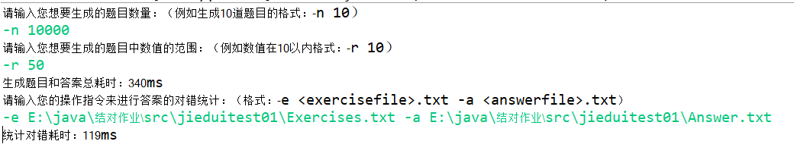
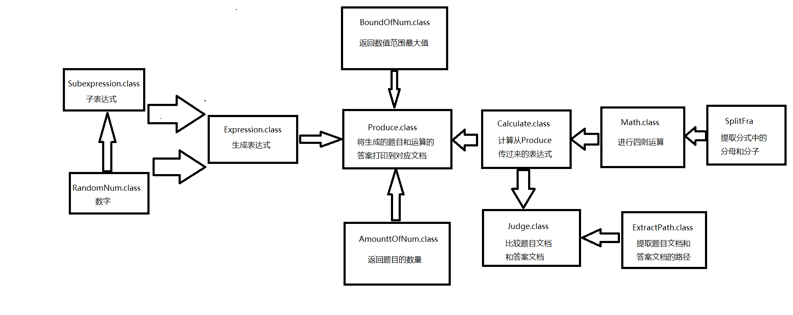
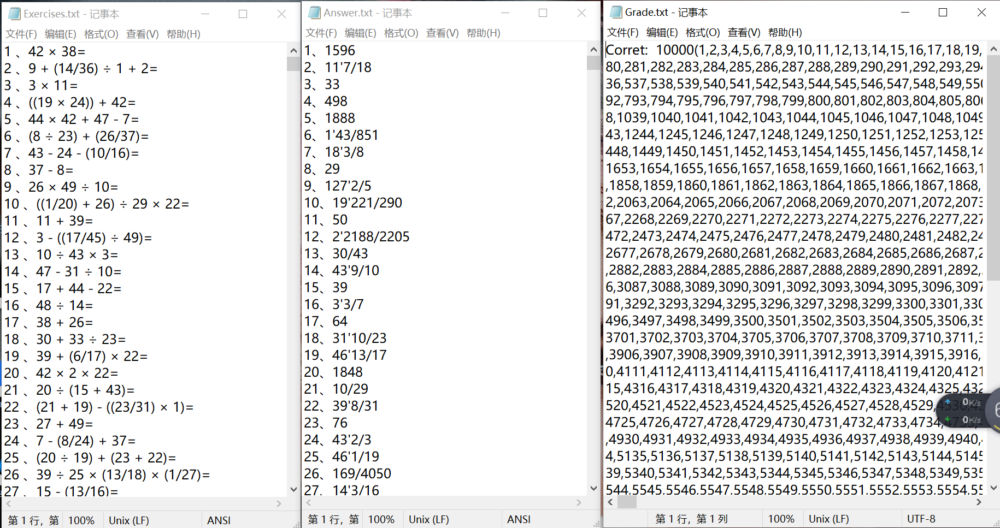
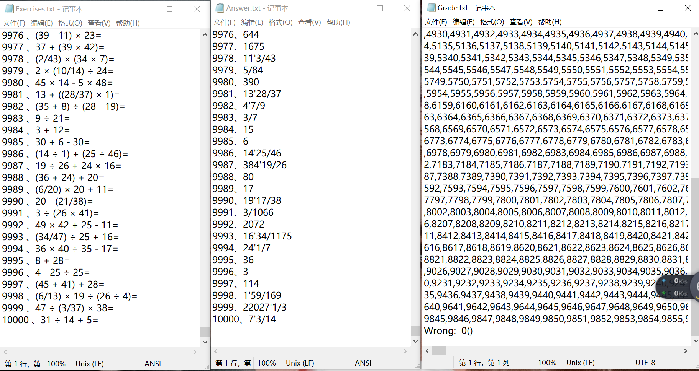
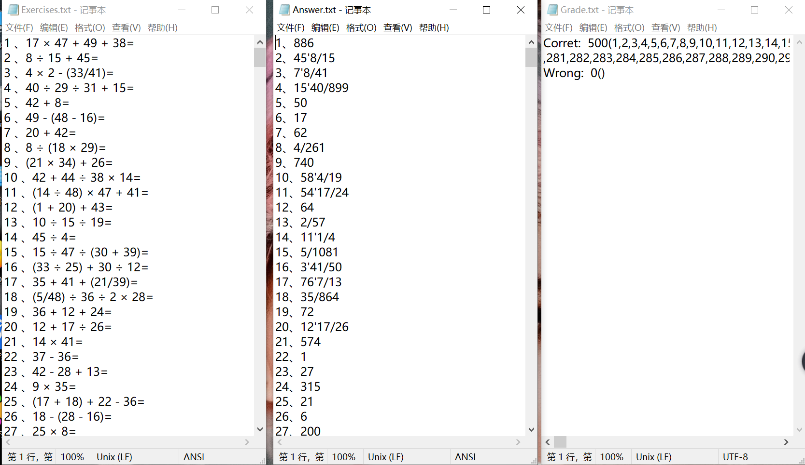
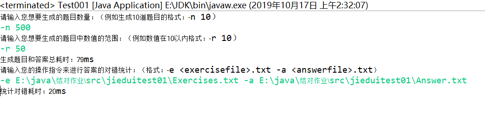
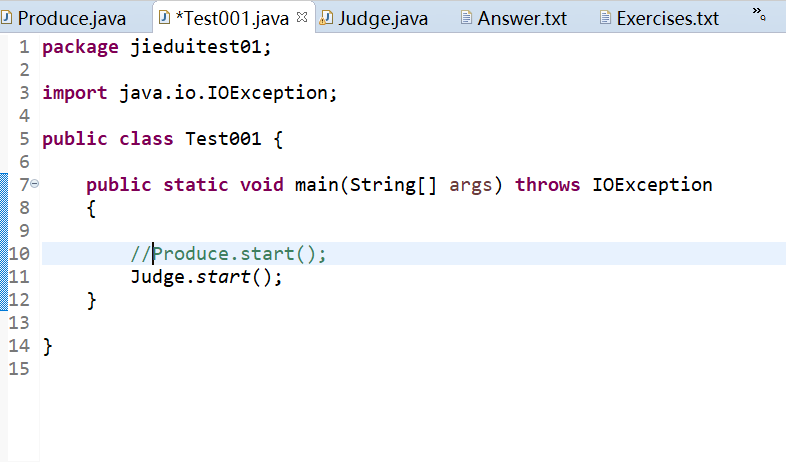
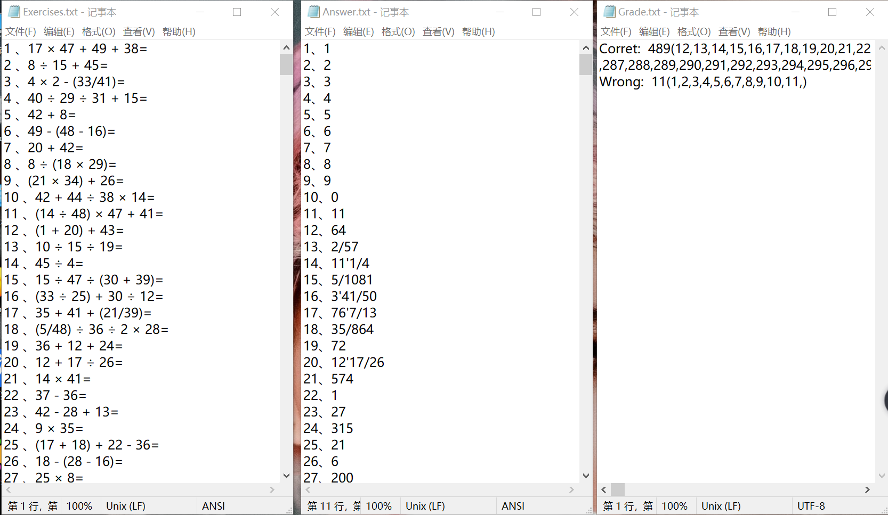
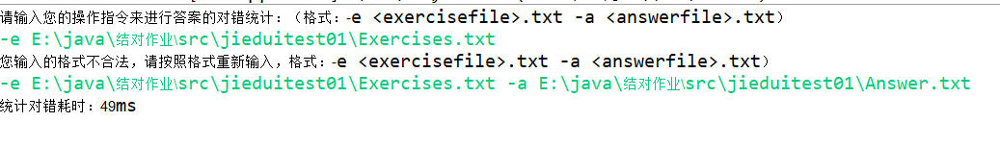

原文连接:https://www.cnblogs.com/390-xie/p/11686734.html
作者：谢伟洁3117004673
一、Github项目地址： https://github.com/jack-xie460/mytest.git
二、PSP表格
|
PSP2.1 |
Personal Software Process Stages |
预估耗时（分钟） |
实际耗时（分钟） |
|
Planning |
计划 |
|
|
|
· Estimate |
· 估计这个任务需要多少时间 |
|
|
|
Development |
开发 |
|
|
|
· Analysis |
· 需求分析 (包括学习新技术) |
|
|
|
· Design Spec |
· 生成设计文档 |
|
|
|
· Design Review |
· 设计复审 (和同事审核设计文档) |
|
|
|
· Coding Standard |
· 代码规范 (为目前的开发制定合适的规范) |
|
|
|
· Design |
· 具体设计 |
|
|
|
· Coding |
· 具体编码 |
|
|
|
· Code Review |
· 代码复审 |
|
|
|
· Test |
· 测试（自我测试，修改代码，提交修改） |
|
|
|
Reporting |
报告 |
|
|
|
· Test Report |
· 测试报告 |
|
|
|
· Size Measurement |
· 计算工作量 |
|
|
|
· Postmortem & Process Improvement Plan |
· 事后总结, 并提出过程改进计划 |
|
|
|
合计 |
|
|
|
三、效能分析
生成10000道50以内的题目耗时340ms
统计10000道题目的对错耗时119ms
速度还行！

四、实现过程
1.执行Produce类的start方法，程序开始运行，首先通过调用AmountOfNum类来判断输入指令是否正确，正确则返回题目数量，
通过调用BoundOfNum类来判断输入指令是否正确,正确则返回数值范围的最大值；
2.Produce类调用Expression类随机生成表达式，表达式又可通过子表达式和数值之间随机结合，而子表达式又可通过数值随机
结合，从而生成各种各样的表达式；
3.生成的表达式传入Calculate类，在Calculate中，通过调用houzhuiexp方法将传入的中缀表达式转化为后缀表达式，然后调用
calculate方法调用递归方法recusion对后缀表达式进行计算产生结果，；
4.将产生的题目和结果循环打印到相应的文件中；
5.执行Judge类来中的start方法进行对错统计，首先通过调用ExtractPath类来判断输入指令是否正确，正确则返回题目文档和
答案文档的路径，然后进行对错统计。
6.各个类之间的协同合作图：

五、代码说明
1.通过输入指令生成题目文档和答案文档的代码：


1 package jieduitest01;
2
3 import java.io.File;
4 import java.io.FileWriter;
5 import java.io.IOException;
6
7 //控制台输入命令，生成题目和答案放在对应文档中
8 public class Produce
9 {
10
11 public static void start() throws IOException
12 {
13
14 File exerciseFile = new File("E:\\java\\结对作业\\src\\jieduitest01\\Exercises.txt");
15 File answerFile = new File("E:\\java\\结对作业\\src\\jieduitest01\\Answer.txt");
16 FileWriter writeToExercisefile =new FileWriter(exerciseFile);
17 FileWriter writeToAnswerfile =new FileWriter(answerFile);
18
19 System.out.println("请输入您想要生成的题目数量：（例如生成10道题目的格式：-n 10）");
20 while(!AmountOfExp.method()) {}
21 int amount = AmountOfExp.getAmount();
22
23 System.out.println("请输入您想要生成的题目中数值的范围：（例如数值在10以内格式：-r 10）");
24 while (!BoundOfNum.method()) {}
25 int bound = BoundOfNum.getBound();
26
27 String expression;
28 //可变数组存储后缀表达式用以查重
29 StringBuilder expressionSet = new StringBuilder();
30 //循环打印题目和答案
31 for(int i=0;i<amount;i++)
32 {
33 expression =Expression.expression(bound);
34 Calculate cal = new Calculate(expression);
35 String houzhuiExp = cal.houzhuiexp();
36
37 //产生的后缀表达式与之前的重复，即产生相同的题目
38 if(expression.indexOf(houzhuiExp)!=-1)
39 {
40 i--;
41 continue;
42 }
43
44 expressionSet.append(houzhuiExp);
45 String result = cal.calculate();
46
47 //计算过程产生负数
48 if(result.equals("?"))
49 {
50 i--;
51 continue;
52 }
53
54 writeToExercisefile.write(i+1 +" 、" + expression + "="+"\n");
55 writeToAnswerfile.write(i+1 +"、" + result + "\n" );
56
57 }
58 writeToExercisefile.close();
59 writeToAnswerfile.close();
60 }
61
62
63 } 1 package jieduitest01;
2
3 import java.util.Scanner;
4 import java.util.regex.Matcher;
5 import java.util.regex.Pattern;
6
7 //使用 -n 参数控制生成题目的个数
8 public class AmountOfExp
9 {
10
11 private static int amount;
12
13 public static int getAmount()
14 {
15 return amount;
16 }
17
18 //判断输入指令，并从正确输入指令中提取生成题目的数量
19 public static boolean method()
20 {
21
22 Pattern p = Pattern.compile("(-)(n)(\\s+)(\\d{1,})");
23 Scanner scan = new Scanner(System.in);
24 String str = scan.nextLine();
25 Matcher m = p.matcher(str);
26 boolean bo = m.matches();
27 String[] sarr ;
28 if(!bo)
29 System.out.println("您输入的格式不合法，请按照格式重新输入，例如：-n 10");
30 else
31 {
32 sarr = str.split("\\s+");
33 amount = Integer.parseInt(sarr[1]);
34 }
35 return bo;
36 }
37
38 }
1 package jieduitest01;
2
3 import java.util.Scanner;
4 import java.util.regex.Matcher;
5 import java.util.regex.Pattern;
6
7 //使用 -r 参数控制题目中数值范围
8 public class BoundOfNum
9 {
10
11 private static int bound;
12
13 public static int getBound()
14 {
15 return bound;
16 }
17
18 //判断输入指令，并从输入指令中提取题目中数值的范围
19 public static boolean method()
20 {
21
22 Pattern p = Pattern.compile("-r\\s+\\d+");
23 Scanner scan = new Scanner(System.in);
24 String str = scan.nextLine();
25 String[] sarr ;
26 Matcher m = p.matcher(str);
27 boolean bo = m.matches();
28 if(!bo)
29 System.out.println("您输入的格式不合法，请按照格式重新输入，例如：-r 10");
30 else
31 {
32 sarr = str.split("\\s+");
33 bound = Integer.parseInt(sarr[1]);
34 }
35 return bo;
36 }
37
38 }
1 package jieduitest01;
2
3 import java.util.Random;
4
5 //生成表达式
6 public class Expression
7 {
8
9 static Random ran=new Random();
10
11 public static String expression(int bound)
12 {
13
14 String ziexp1 = null,ziexp2 = null;
15
16 //概率结合不同的子表达式
17 int i = ran.nextInt(4);
18 switch(i)
19 {
20
21 case 0:
22 ziexp1 = RandomNum.nextNumber(bound);
23 ziexp2 = RandomNum.nextNumber(bound);
24 break;
25 case 1:
26 ziexp1 = RandomNum.nextNumber(bound);
27 ziexp2 = SubExpression.ziepression(bound);
28 break;
29 case 2:
30 ziexp1 = SubExpression.ziepression(bound);
31 ziexp2 = RandomNum.nextNumber(bound);
32 break;
33 case 3:
34 ziexp1 = SubExpression.ziepression(bound);
35 ziexp2 = SubExpression.ziepression(bound);
36 break;
37 default :
38 }
39
40 String operater = operater();
41 String exp = ziexp1 +" "+operater+" "+ ziexp2;
42 return exp;
43 }
44
45
46 public static String operater()
47 {
48
49 int opnum = ran.nextInt(4);
50 switch(opnum)
51 {
52
53 case 0:
54 return "+";
55 case 1:
56 return "-";
57 case 2:
58 return "×";
59 case 3:
60 return "÷";
61 }
62 return null;
63 }
64
65 }
2.将生成的表达式计算出结果的代码（用到波兰表达式，即后缀表达式）：
1 package jieduitest01;
2
3 import java.util.HashMap;
4 import java.util.Stack;
5
6 //传入生成的表达式计算出结果
7 public class Calculate
8 {
9 //用HashMap存储运算符及其优先级
10 HashMap<String,Integer> opls;
11 String str0;
12
13 //构造函数，并初始化各个运算符的优先级
14 public Calculate(String str0)
15 {
16 this.str0 = str0;
17 if(opls==null)
18 {
19 opls = new HashMap<String,Integer>(4);
20 opls.put("+",0);
21 opls.put("-",0);
22 opls.put("×",1);
23 opls.put("÷",1);
24 }
25 }
26
27 //将中缀表达式转化成后缀表达式
28 public String houzhuiexp()
29 {
30 //出去空格符
31 String str = str0.replace(" ","");
32 //将中缀表达式分割放入数组
33 String[] strArray = split(str);
34 //后缀表达式存储栈
35 Stack<String> houzhuiSta = new Stack<String>();
36 //临时栈
37 Stack<String> temStack = new Stack<String>();
38
39 for(String src:strArray)
40 {
41 //将操作数直接压入后缀表达式的栈
42 if(isNum(src))
43 houzhuiSta.push("("+src+")");
44 else //操作数或者括号
45 {
46 if(temStack.isEmpty()||src.equals("("))
47 { //"("或临时栈为空
48 temStack.push(src);
49 }
50 else
51 {
52 if(isLow(temStack.peek(),src))
53 {
54 if(!src.equals(")"))
55 { ////优先级比临时栈栈首值的低
56 while((!temStack.isEmpty())&&(isLow(temStack.peek(),src)))
57 {
58 houzhuiSta.push(temStack.pop());
59 }
60 temStack.push(src);
61 }else//为")"
62 { //临时栈栈首的值不为"("
63 while((!temStack.isEmpty())&&!(temStack.peek().equals("(")))
64 {
65 houzhuiSta.push(temStack.pop());
66 }
67 //临时栈栈首的值为"("
68 if((!temStack.isEmpty())&&(temStack.peek().equals("(")))
69 {
70 temStack.pop();
71 }
72 }
73 }else
74 {
75 temStack.push(src);
76 }
77 }
78 }
79 }
80 //将临时栈的剩余值压入后缀栈
81 while(!temStack.empty())
82 {
83 houzhuiSta.push(temStack.pop());
84 }
85 //将后缀栈中的后缀表达式转化为字符串返回
86 StringBuilder sb1 = new StringBuilder();
87 for(String str1:houzhuiSta)
88 {
89 sb1.append(str1);
90 }
91 houzhuiSta.clear();
92 return sb1.toString();
93
94 }
95
96 //分割表达式
97 public String[] split(String str)
98 {
99
100 StringBuilder sb = new StringBuilder(str.length()*2);
101 for(char ch:str.toCharArray())
102 {
103
104 if(ch=='+'||ch=='-'||ch=='×'||ch=='÷'||ch=='('||ch==')')
105 {
106 sb.append(",");
107 sb.append(ch);
108 sb.append(",");
109 }
110 else
111 {
112 sb.append(ch);
113 }
114 }
115 String src = sb.toString().replaceAll(",{2,}",",");
116 return src.split(",");
117
118 }
119
120 //分割后缀表达式
121 public String[] splitHou(String str)
122 {
123
124 StringBuilder sb = new StringBuilder(str.length());
125 int i = 0;
126 for(char ch:str.toCharArray())
127 {
128 if(ch=='+'||ch=='-'||ch=='×'||ch=='÷')
129 {
130 sb.append(",");
131 sb.append(ch);
132 }
133 else if(ch=='('||ch==')')
134 {
135 if(i>=1)
136 {
137 sb.append(',');
138 }
139 }
140 else
141 {
142 sb.append(ch);
143 i++;
144 }
145 }
146 String src = sb.toString().replaceAll(",{2,}",",");
147 return src.split(",");
148
149 }
150
151 //化简分数
152 String simplify(String exResult)
153 {
154 SplitFra sp = new SplitFra(exResult);
155 int numberater =sp.getNumberater();
156 int deno =sp.getDeno();
157 int comDiv = comDivisor(numberater,deno);
158 numberater /= comDiv;
159 deno /= comDiv;
160 int integer = numberater/deno;
161 int fration = numberater%deno;
162 if(integer == 0)
163 {
164 return fration + "/" + deno;
165 }else if (fration == 0)
166 {
167 return integer+"";
168 }else
169 {
170 return integer + "'" + fration + "/" +deno;
171 }
172 }
173
174 //辗转相除法求最大公约数
175 int comDivisor(int a,int b)
176 { int c = 1;
177 while(a % b != 0)
178 {
179 c = a % b;
180 a = b;
181 b = c;
182 }
183 return b;
184 }
185
186 //判断是否是操作数
187 public boolean isNum(String str)
188 {
189 for (char ch : str.toCharArray())
190 {
191 if(ch=='+'||ch=='-'||ch=='×'||ch=='÷'||ch=='('||ch==')')
192 return false;
193 }
194 return true;
195 }
196
197 //比较优先级
198 public boolean isLow(String pop, String str)
199 {
200 if(str.equals(")"))
201 return true;
202 if(opls.get(pop)==null||opls.get(str)==null)
203 return false;
204 return opls.get(pop)>=opls.get(str);
205 }
206
207 //调用递归方法利用后缀表达式计算结果
208 public String calculate()
209 {
210 //后缀表达式
211 String houhzhuiExp = houzhuiexp();
212 String[] strs = splitHou(houzhuiexp());
213 //调用递归得到结果
214 String exResult = recursion(strs);
215 //计算过程产生负数返回"?"
216 if(exResult.equals("?"))
217 {
218 return "?";
219 }
220 String result ;
221 //结果是分数，化简
222 if(exResult.contains("/"))
223 {
224 result = simplify(exResult);
225 }else
226 {
227 result = exResult;
228 }
229 return result;
230 }
231 //递归方法
232 public String recursion(String[] str)
233 {
234 //计算过程是否出现负数的标记
235 boolean flag = false;
236 int nowlength = str.length;
237 if(str[str.length-1]==" ")
238 {
239 nowlength = str.length-1;
240 }else if(str.length == 1) //后缀表达式长度为1则递归结束返回结果
241 {
242 return str[0];
243 }
244 String[] nextstr = new String[nowlength-2];
245 for(int i = 2;i<nowlength;i++)
246 {
247
248 if(str[i].equals("+")||str[i].equals("-")||str[i].equals("×")||str[i].equals("÷"))
249 {
250 String num1 = str[i-2];
251 String num2 = str[i-1];
252 String operater = str[i];
253 String result;
254 switch(operater)
255 {
256 case "+":
257 result = Math.add(num1,num2);
258 break;
259 case "-":
260 result = Math.sub(num1,num2);
261 //有负数产生
262 if(result.equals("?"))
263 {
264 flag = true;
265 }
266 break;
267 case "×":
268 result = Math.mul(num1,num2);
269 break;
270 case "÷":
271 result = Math.div(num1,num2);
272 break;
273 default :
274 result = null;
275 }
276 //后缀表达式每计算一次，就构建新的后缀表达式
277 for(int i1=0;i1<nowlength-2;i1++)
278 {
279 if(i1<i-2)
280 {
281 nextstr[i1] = str[i1];
282 }else if(i1==i-2)
283 {
284 nextstr[i1] = result;
285 }else
286 {
287 nextstr[i1] = str[i1+2];
288 }
289 }
290 break;
291 }
292 }
293 if(flag)
294 {
295 return "?";
296 }
297 return recursion(nextstr);
298 }
299
300 }3.针对相应的题目文档，对答案文档的进行对错统计的代码：
1 package jieduitest01;
2
3 import java.io.BufferedReader;
4 import java.io.File;
5 import java.io.FileNotFoundException;
6 import java.io.FileReader;
7 import java.io.FileWriter;
8 import java.io.IOException;
9
10 /*
11 * 输入指令将题目文件的计算结果与答案文件的答案比较
12 * 将正确的及错误的题目数量和题号打印到Grade.txt文件中
13 */
14 public class Judge
15 {
16
17 public static void start() throws IOException
18 {
19 System.out.println("请输入您的操作指令来进行答案的对错统计：（格式：-e <exercisefile>.txt -a <answerfile>.txt）");
20 while(!ExtractPath.method()) {}
21 String exeFilePath = ExtractPath.getExeFilePath();
22 String answerFilePath = ExtractPath.getAnswerFilePath();
23 BufferedReader exe = new BufferedReader(new FileReader(exeFilePath));
24 BufferedReader answer = new BufferedReader(new FileReader(answerFilePath));
25 File grade = new File("E:\\java\\结对作业\\src\\jieduitest01\\Grade.txt");
26 FileWriter writeToGrade = new FileWriter(grade);
27
28 String exep = "";
29 StringBuilder corretNum = new StringBuilder();
30 StringBuilder wrongNum = new StringBuilder();
31 int corret = 0;
32 int wrong = 0;
33 int num = 1;
34 while((exep = exe.readLine())!=null)
35 {
36 String anstr = answer.readLine();
37 String[] exestrs = exep.split("、");
38 String[] anstrs = anstr.split("、");
39 String str = exestrs[1].replaceAll("=", "");
40 Calculate cal = new Calculate(str);
41 String result = cal.calculate();
42 String answerstr = anstrs[1];
43 if(result.equals(answerstr))
44 {
45 corret++;
46 corretNum.append(num + ",");
47 }else
48 {
49 wrong++;
50 wrongNum.append(num + ",");
51 }
52 num++;
53
54 }
55 writeToGrade.write("Corret: "+corret+"("+corretNum.toString()+")"+"\n");
56 writeToGrade.write("Wrong: "+wrong+"("+wrongNum.toString()+")");
57 writeToGrade.close();
58 exe.close();
59 answer.close();
60 }
61 }
1 package jieduitest01;
2
3 import java.io.File;
4 import java.util.Scanner;
5 import java.util.regex.Matcher;
6 import java.util.regex.Pattern;
7
8 /*
9 * 判断输入指令是否正确，并从正确指令中提取目标文件位置
10 * 题目文件位置可由getExeFilePath方法获得
11 * 答案文件位置可由getAnswerFilePath方法获得
12 */
13 public class ExtractPath {
14
15 private static String exeFilePath;
16 private static String answerFilePath;
17
18 public static String getExeFilePath()
19 {
20 return exeFilePath;
21 }
22
23 public static String getAnswerFilePath()
24 {
25 return answerFilePath;
26 }
27
28 public static boolean method()
29 {
30
31 Pattern p = Pattern.compile("(-)(e)(\\s+)(\\S+)(\\.)(txt)(\\s+)(-)(a)(\\s+)(\\S+)(\\.)(txt)");
32 Scanner scan = new Scanner(System.in);
33 String str = scan.nextLine();
34 Matcher m = p.matcher(str);
35 boolean bo = m.matches();
36 String[] sarr;
37 if(!bo)
38 {
39 System.out.println("您输入的格式不合法，请按照格式重新输入，格式：-e <exercisefile>.txt -a <answerfile>.txt）");
40 }else
41 {
42 sarr = str.split("\\s+");
43 exeFilePath = sarr[1];
44 answerFilePath = sarr[3];
45 File src1 = new File(exeFilePath);
46 File src2 = new File(answerFilePath);
47 if(!(src1.exists()&&src2.exists()))
48 {
49 System.out.println("您输入的文件夹我找不到啊！！！还请重新输入");
50 bo = false;
51 }
52 }
53 return bo;
54 }
55
56 }
六、测试运行
1.生成10000道100以内题目、答案和对错统计：


2.生成500道50以内的题目、答案和对错统计：


3.修改答案文档中的前11道题并单独执行对错统计：

七、项目小结
通过这次作业我体验到了编程的乐趣，学习了很多新的知识，收获很多。